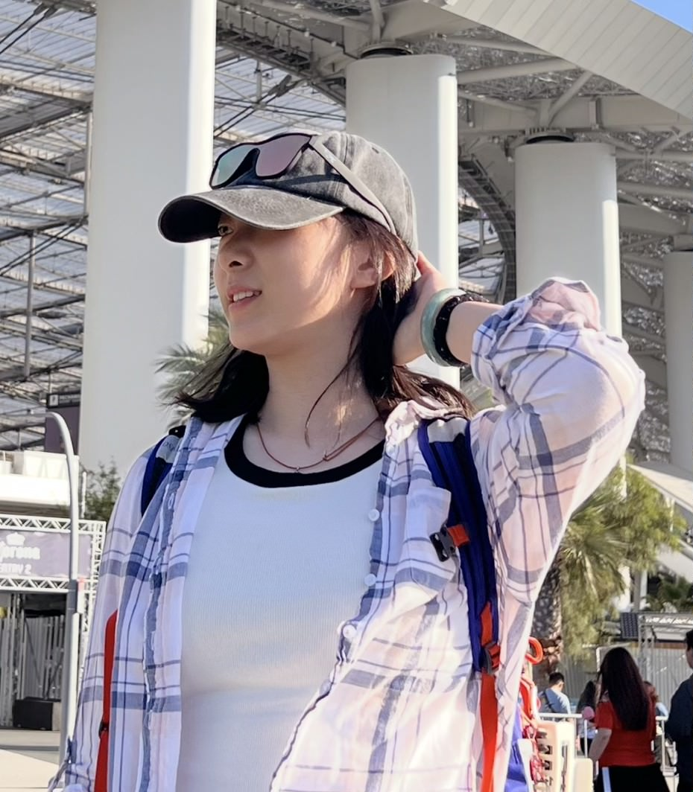

Machine Learning Researcher
RBC Borealis
- Developed and researched world model for finance and human behavior.
- @ Yanshuai Cao
#Research #Reinforcement Learning
Hi! I am Jennifer. I am a graduate student at Yale University. Before coming to Yale,I obtained my BASc in Engineering Science at University of Toronto. I was fortunate to be guided by Professor Julian McAuley, Professor Han Liu, and Professor William Cunningham on various research projects.
My research interests lie in the intersection of large foundation models, agentic systems, and multimodal models.
I am particularly interested in
1. understanding the capabilities of large foundation models,
2. developing and applying agentic systems for various applications,
3. exploring the potential of multimodal models for complex tasks.
I am also passionate about exploring the societal implications of AI and developing responsible AI technologies.
In my free time, I enjoy outdoor activities and all kinds of sports. I love exploring new technologies: you can see my blog posts here. If you would love to have a chat, feel free to shoot me an email!

RBC Borealis
#Research #Reinforcement Learning
Ontario Teachers' Pension Plan
#Langchain #Python #SQL #Julia #C# #Flask
EQ Bank
#Python #SQL #Tableau #VBA #Excel
National Research Council Canada
#scikit-learn #Optuna #GeoPandas #Python #C# #Tableau #SQL